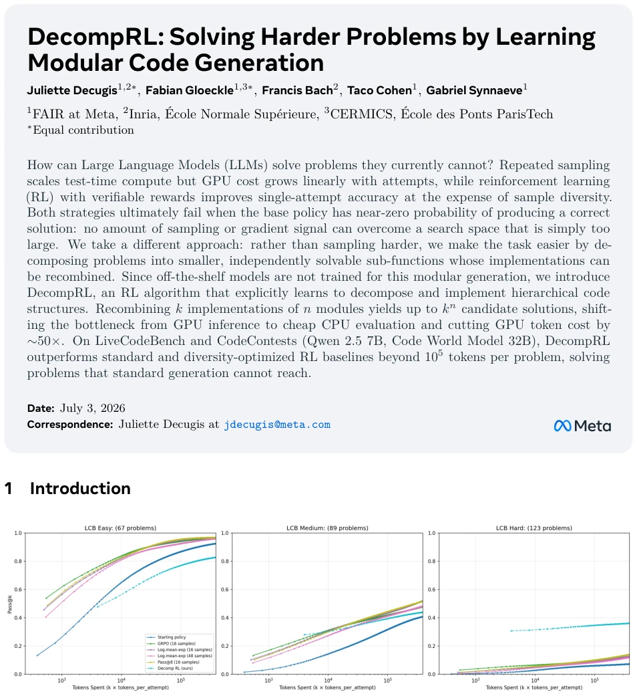
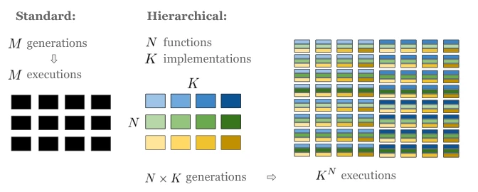
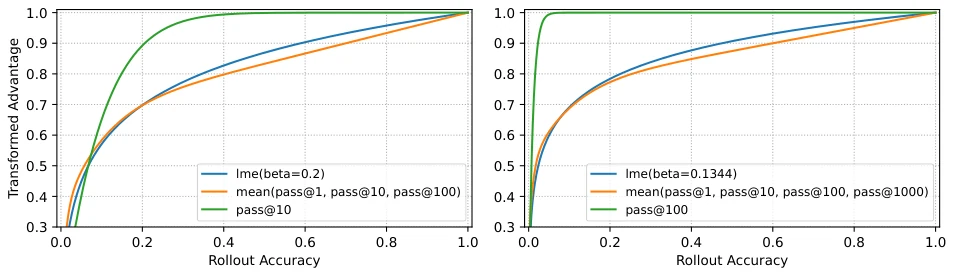
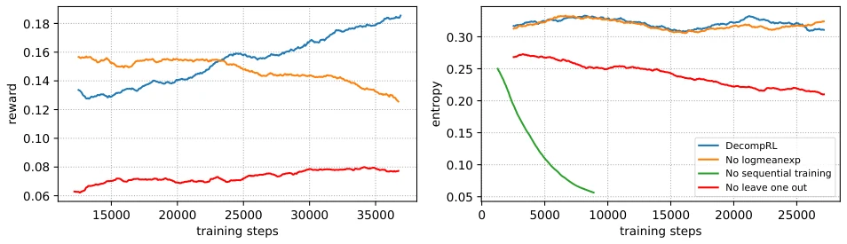
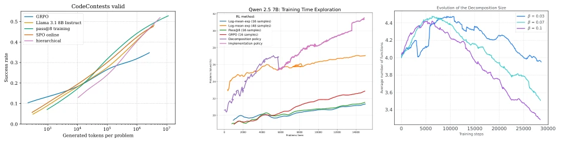
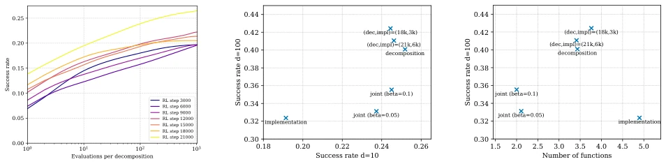
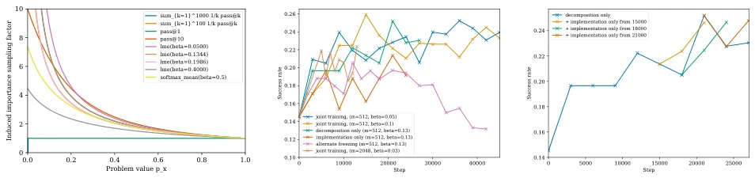
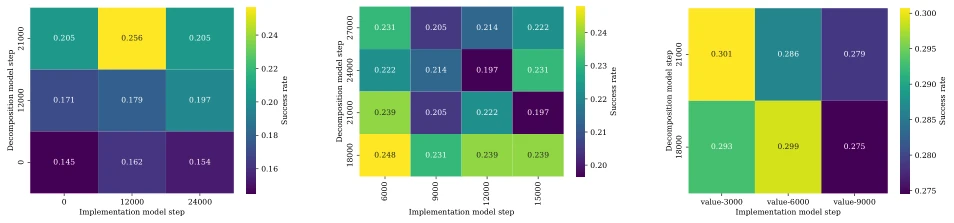
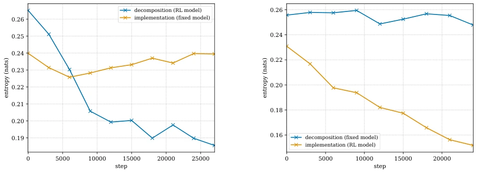
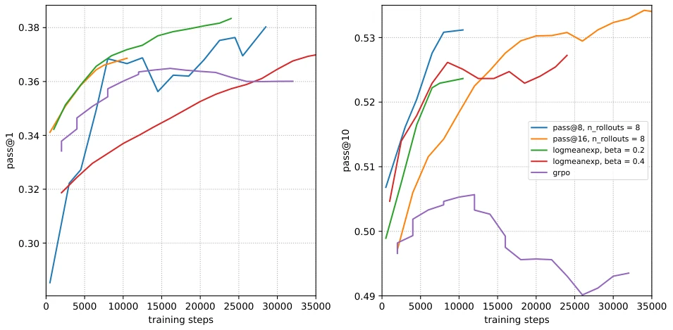

This paper pours cold water on the "brute-force sampling" era of LLMs writing code. The core logic of DecompRL is very compelling: instead of letting GPUs wildly guess answers, it is better to let the model learn to "cut the cake", breaking hard problems into small functions and then piecing them together. This approach indeed saves 50 times the GPU Token cost, shifting the bottleneck from expensive inference to cheap CPU execution. But do not celebrate too early; the paper itself admits that for simple problems, this "modularization" instead incurs a "format tax", leading to a drop in pass@1. Moreover, the number of decomposed functions will "collapse" in the later stages of training, eventually possibly degenerating into ordinary generation. To put it plainly, this is an "expert iteration" tool prepared for tough problems, not a universal cure. For models pursuing extreme generality, this counts as a "biased" optimization, but under high budget scenarios, it indeed can mine solutions that base models cannot reach, and can even serve as an offline data collector to assist distillation.
研究动机Motivation
当前 LLM 解决可验证任务（如编程）主要依赖重复采样（pass@k），但这导致 GPU 成本线性增长（Brown et al., 2024）。现有强化学习（RL）方法虽提升单次准确率，却牺牲了采样多样性，难以在大规模推理时扩展（Chen et al., 2025）。当基座策略生成正确解的概率接近零时，单纯增加采样或梯度信号无法克服巨大的搜索空间。此外，现有方法多关注整体代码生成，缺乏对模块化结构的显式学习。DecompRL 旨在解决这一瓶颈，通过分解问题为独立子函数并重组，利用 CPU 廉价评估替代 GPU 昂贵推理，从而在有限 Token 预算下实现搜索空间的指数级扩展，解决基座模型无法触及的难题，特别是针对冷启动或高难度任务。
Currently, LLMs solving verifiable tasks (such as programming) mainly rely on repeated sampling (pass@k), but this leads to linear growth in GPU costs (Brown et al., 2024). Existing reinforcement learning (RL) methods, while improving single-shot accuracy, sacrifice sampling diversity and are difficult to scale during large-scale inference (Chen et al., 2025). When the probability of the base policy generating a correct solution approaches zero, simply increasing sampling or gradient signals cannot overcome the huge search space. Furthermore, existing methods mostly focus on overall code generation, lacking explicit learning of modular structures. DecompRL aims to solve this bottleneck by decomposing problems into independent sub-functions and recombining them, utilizing cheap CPU evaluation to replace expensive GPU inference, thereby achieving exponential expansion of the search space under limited Token budgets, solving problems unreachable by base models, especially targeting cold start or high-difficulty tasks.

Figure 1 Decomp RL solves harder problems than existing RL methods. Our hierarchical training learns 1) a decomposition policy that breaks down problems into simpler functions and 2) an implementation policy that writes code for each function in parallel. Given a high token budget, Decomp RL solves up to 35% problems of the LiveCodeBench hard subset (2024/08/01 to 2025/02/01) Jain et al. (2024a).

Figure 2 Learning to scale CPU budget. (left) Example problem from LiveCodeBench and the generated solutions with regular and hierarchical inference. (right) Solving a problem directly in M tries leads to M complete code solutions to evaluate. Hierarchical inference instead generates N functions each implemented K times independently. Recombining these partial code blocks gives up to KN full code solutions to evaluate.
方法Method
DecompRL 采用分层推理框架，包含两个策略：分解策略（Decomp Policy）生成函数签名和规划，实现策略（Impl Policy）并行编写各函数代码。整体流程为：1) 模型生成 N 个函数定义；2) 每个函数独立生成 K 种实现；3) 重组所有组合得到 KN 个候选解。创新点在于：1) 奖励聚合：使用 logmeanexp 函数平滑插值 pass@k 与平均奖励，平衡探索与利用（图 3）；2) 梯度估计：针对重组后的相关奖励，采用 leave-one-out 基线降低方差，避免高估特定动作；3) 训练策略：采用顺序训练（Sequential Training），先固定实现策略训练分解策略，再反之，避免熵坍塌（图 6）。这种设计将推理成本线性化，而解空间多项式增长，实现了 GPU 到 CPU 的瓶颈转移，且假设实现间条件独立以捕捉所有交互于分解计划中。
DecompRL adopts a hierarchical reasoning framework, containing two policies: Decomposition Policy (Decomp Policy) generates function signatures and plans, Implementation Policy (Impl Policy) writes code for each function in parallel. The overall process is: 1) Model generates N function definitions; 2) Each function independently generates K implementations; 3) Recombine all combinations to obtain KN candidate solutions. Innovations lie in: 1) Reward Aggregation: Using the logmeanexp function to smooth interpolate pass@k and average reward, balancing exploration and exploitation (Fig. 3); 2) Gradient Estimation: For correlated rewards after recombination, adopting a leave-one-out baseline to reduce variance, avoiding overestimation of specific actions; 3) Training Strategy: Adopting Sequential Training, first fixing the implementation policy to train the decomposition policy, then vice versa, to avoid entropy collapse (Fig. 6). This design linearizes inference cost, while solution space grows polynomially, achieving a bottleneck shift from GPU to CPU, and assumes conditional independence between implementations to capture all interactions in the decomposition plan.

Figure 3 Nonlinear reward transformations with utility functions. Reward transformation induced by logmeanexpβ for different values of β, alongside the ones of pass@k: u(p) = 1 −(1 −p)k, and the mean of pass@k values. See Appendix D for details.

Figure 6 Ablation study on the DecompRL objective, removing logmeanexp for a mean aggregation over rewards using a softmax, removing sequential training for joint training of both policies, and the leave one out baseline for value estimation in the advantage all lead to entropy or reward collapse.
Tested models such as Qwen 2.5 7B, Llama 3.1 8B on LiveCodeBench and CodeContests. Baselines include GRPO, pass@8 training, SPO, etc. Metrics are pass@tokens and success rate. Results show that at budgets above 10^5 tokens, DecompRL significantly outperforms baselines, with success rate improvement (Fig. 4). Ablation experiments indicate that logmeanexp reward and sequential training are crucial for preventing reward collapse (Fig. 6). Additionally, decomposition size decreases with increased training, but large decompositions perform better at high budgets (Fig. 5). GPU cost reduced by approximately 50 times, validating the effectiveness of the computational bottleneck shift. Under a 500,000 tokens budget, DecompRL success rate continues to rise, while baselines tend to saturate, proving its scalability advantage under high compute.

Figure 4 Diversity from recombined samples. (a) Scaling inference-compute on CodeContests valid: Standard reinforce- ment learning for code (GRPO) increases pass@1 while degrading pass@k for large k. Our method of hierarchical inference is competitive with scaling inference on the instruct model as well as with diversity-focused reinforcement learning methods pass@8-training and SPO when evaluating only up to 4096 combinations per decomposition. (b) Training the implementation and decomposition policies both help increase the solve rate per problem. (c) The de- composition policy learns to use less functions during training. We apply a logmeanexp normalization where the β can be tuned between mean (β →∞) and max (β →0).

Figure 5 Recombination is critical for benchmark performance. A series of analysis done with LLama 3.1 8B Instruct. (a) Training a decomposition and implementation policy helps maximize success rate per re-combined code evaluation despite a fixed inference budget. (b) Let d the number of decompositions per problem, success rate at d = 10 attempts does not predict success rate at d = 100 attempts, (c) whereas the size of decompositions does. Best performing models for large attempt numbers produce bigger decompositions on average.

Figure 7 Training dynamics and ablations. (a) Importance sampling weights induced by explorative utility functions enable jointly optimizing pass@1 to pass@k. (b) Ablation on CodeContests validation pass@10 shows that removing implementation training does not hurt performance, indicating the decomposition policy is the main RL bottleneck. (c) Continuing a decomposition-only run with implementation training at 15k, 18k, and 21k steps yields checkpoints among the best but within variance of decomposition-only results.

Figure 8 Performance of different combinations of independently trained decomposition and implementation models. We train a model on decompositions with implementations from fixed Llama 3.1 8B Instruct, and another model on implementations with decompositions from fixed Llama 3.1 8B Instruct, and evaluate cross combinations between the resulting checkpoints. This off-policy estimation is not guaranteed to work in principle but some combinations appear to work in practice. Note that the best configuration is the decomposition checkpoint with 21k steps coupled with the implementation checkpoint with 3k steps, highlighting the importance of joint optimization. Evaluations are conducted on CodeContests valid with 4096 function evaluations per decomposition, k = 8 implementations per function a

Figure 9 Policy entropy during decomposition policy training (left) and implementation policy training (right). All ablations in this figure were run during decomposition or implementation policy training, respectively, not at evaluation time. Left: decomposition-only training, the implementation policy of a fixed model only changes marginally with the changing prompts from the decomposition model while decomposition policy entropy decreases. Right: implementation-only training; the implementation policy entropy decreases over the course of training.

Figure 10 Evaluation results during training for baseline methods on the LiveCodeBench v5 split. Experiments ran with the Code World Model 32B FAIR CodeGen team et al. (2025). Sampling is performed with nucleus sampling with a probability mass of 0.95 and temperature 0.6 for all methods.